Mimari
Bir ev yalnızca duvarlardan oluşmaz. Yerel malzemenin hafızası, gün ışığının hareketi ve bahçeyle kurulan ilişki de tasarımın parçasıdır. Cotswold ve Wisteria koleksiyonundaki 17 mimari dosyayla taşın, ahşabın, iç mekânın ve doğayla uyumlu yaşamın izini sürün.
Yedi yeni mimari tasarım
Geometriden toprağa, saman balyasından su döngüsüne ve miselyuma: çevreyle yeni ilişkiler kuran deneysel konut fikirleri.
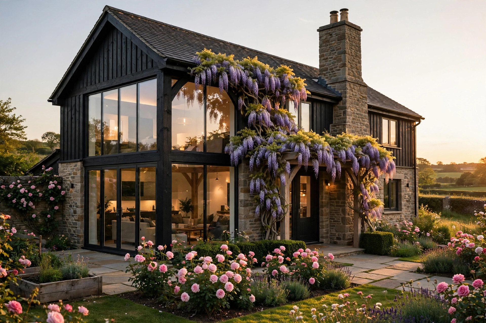
Geometrik Ev — Kare, Dikdörtgen, Çember
Beyaz beton kütleleri, siyah çelik konsolları ve zeytin ağaçlarını çember avlular etrafında birleştiren modern Akdeniz evi.
Projeyi incele →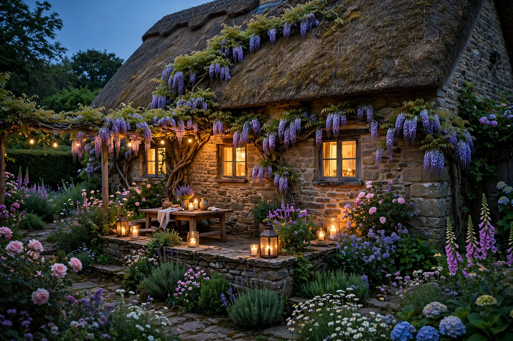
Geometrik Ev — Gece ve Işık Senaryoları
Aynı geometrik evin gece yüzü: sıcak halkalar, kare aydınlatma kutuları ve mavi yansımalı su.
Projeyi incele →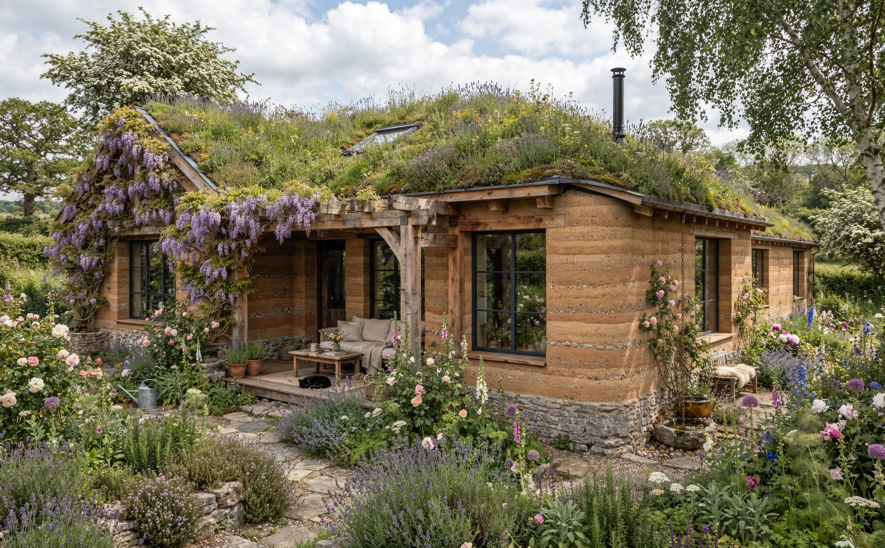
No.06 — Toprak Ev ve Yaşayan Çatı
Katmanlı sıkıştırılmış toprak duvarları, meşe kirişleri ve kekik-lavantayla yaşayan yeşil çatıyı buluşturan doğal ev.
Projeyi incele →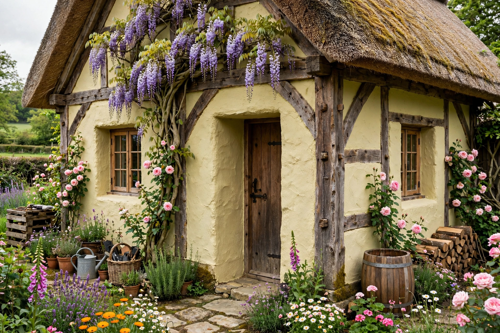
No.07 — Saman Balya Ev
Saman balyanın kalın yalıtım tabakasını kireç sıva ve meşe karkasla birleştiren, nefes alan duvar fikrine dayalı konut.
Projeyi incele →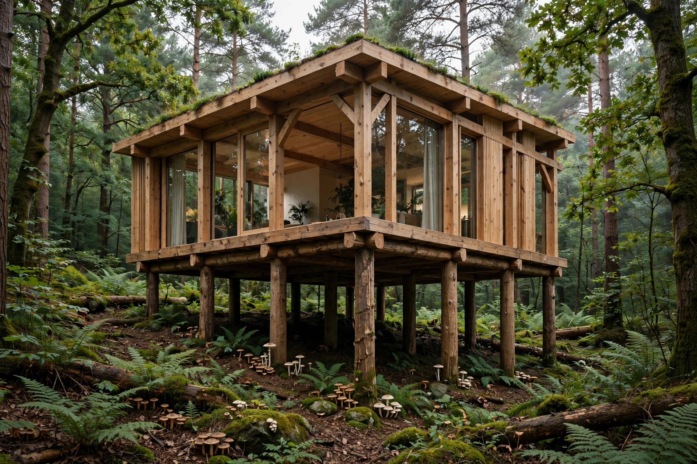
No.08 — Kazık Üstü Orman Evi
Orman tabanına en az müdahaleyle yükselen; altında toprak, bitki ve canlı hareketinin sürmesini amaçlayan ev.
Projeyi incele →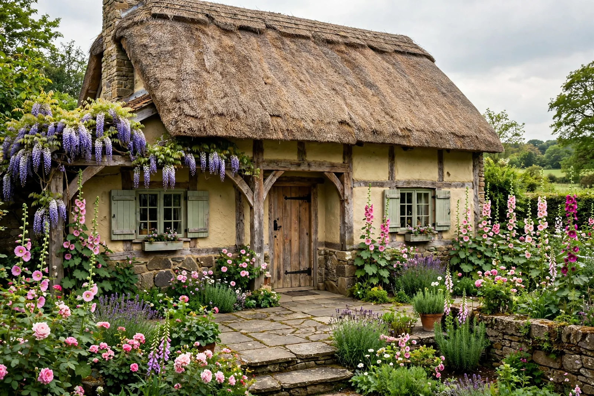
No.09 — Su Evi ve Yağmur Döngüsü
Suyu çatıdan gölete, sazlık filtresinden bahçeye ulaştıran, peyzajı yaşamın su döngüsüyle birleştiren ev.
Projeyi incele →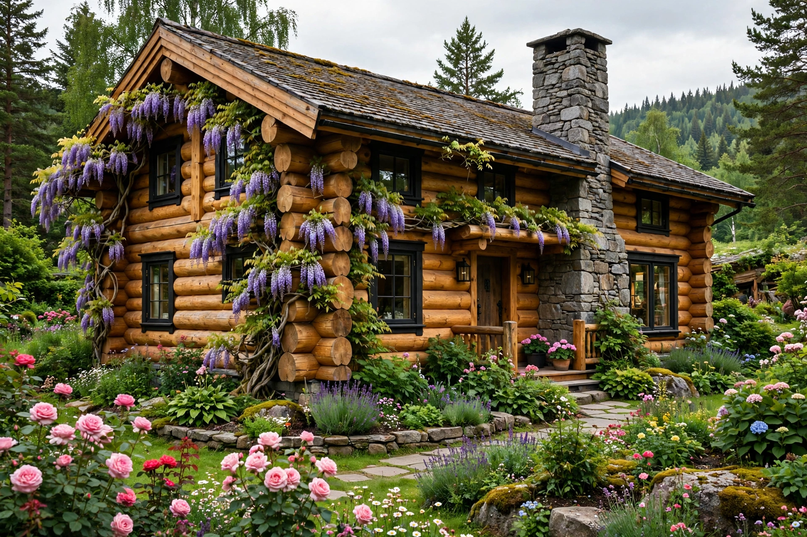
No.10 — Miselyum Mantar Kulübesi
Kenevir sapı ile miselyumu biyo-tabanlı yapı paneli düşüncesinde birleştiren, mantar bahçeli küçük orman kulübesi.
Projeyi incele →Önceki on tasarım, ortak bir ruh
Taş köy evinden kütük evlere, modern ahırdan kara A-Frame yapıya; iç mimarlık, gece ışığı ve 85 m² doğal malzeme evleriyle genişleyen özgün konseptler.

Cotswold Taş Evi
Wisteria & Güller Evi. 95 m² köy evi konsepti: plan, 60 cm kalınlığında taş duvarlar, meşe kirişler, malzeme paleti ve bahçenin mimariyle ilişkisi.
Tasarıma göz at →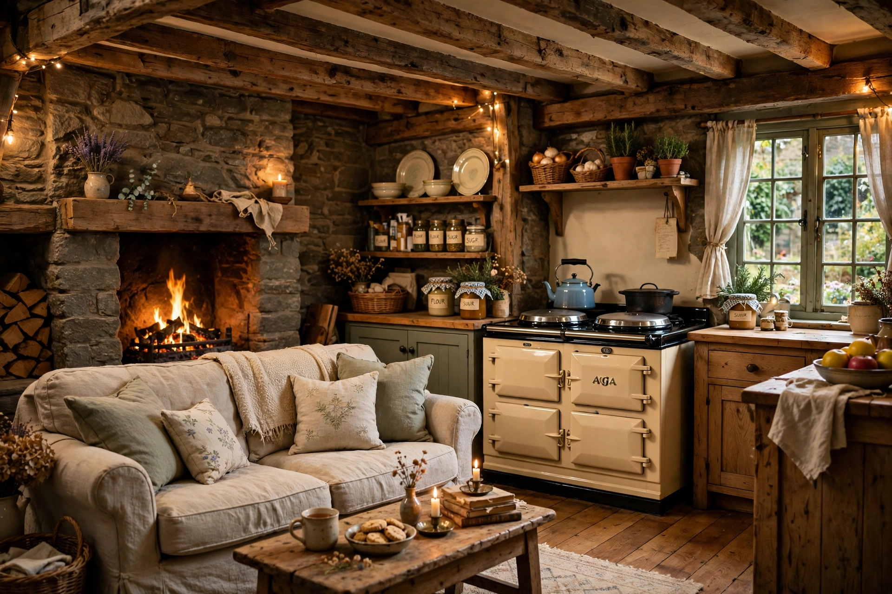
Wisteria Evi — Oda Oda Tam Tur
Giriş holünden taş şömineli salona, mutfaktan yatak odalarına, banyodan mor salkımlı bahçeye: 7 oda ve 1 bahçenin görsel hikâyesi.
Oda oda gez →Wisteria Kütük Evi Projesi
95 m² fırınlanmış çam kütük ev: taş şömine, kuzine mutfak, yaşam alanları ve mor salkımlı bahçe.
Kütük evin mekânlarını keşfet →Wisteria No.03 — Modern Ahır Evi
140 m² modern ahır evi: Cotswold taşı, karartılmış meşe kaplama, çelik cam cephe ve ışıkla kurulan yeni yaşam.
Modern ahır evini incele →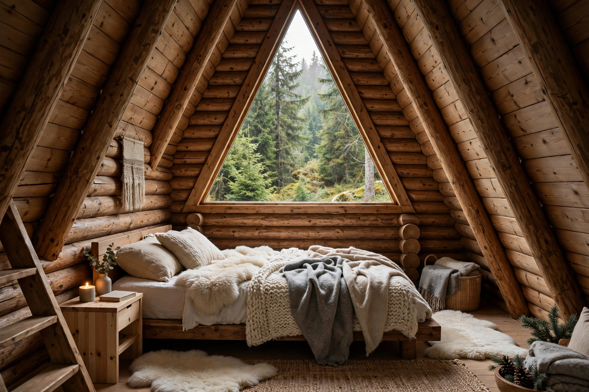
Wisteria No.04 — Kara A-Frame
Kara kütük A-Frame: yüksek üçgen tavan, taş şömine, orman bahçesi, ateş çukuru ve ayrı sauna kulübesi.
Kara A-Frame turuna çık →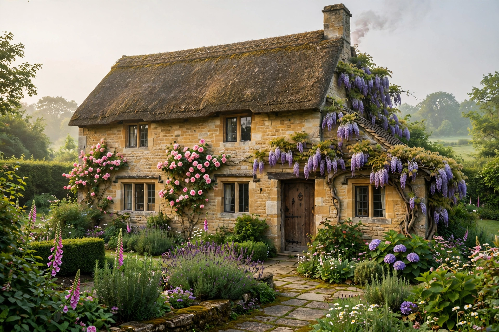
Wisteria Köyü — Dört Ev Koleksiyonu
Kaz Dağları eteklerinde dört evin hikâyesi: taş, kütük, modern ahır ve kara A-Frame modellerinin karşılaştırmalı sunumu.
Dört evi birlikte gör →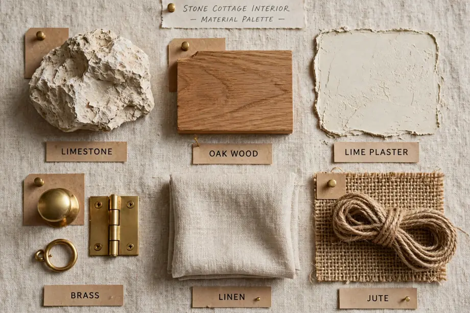
Taş Ev — İç Mimarlık Arşivi
Cotswold taş evinde oda oda iç mimarlık: doğal taş, ahşap, malzeme paleti, doku ve ışıkla kurulan sıcak yaşam alanları.
İç mimarlık dosyasını aç →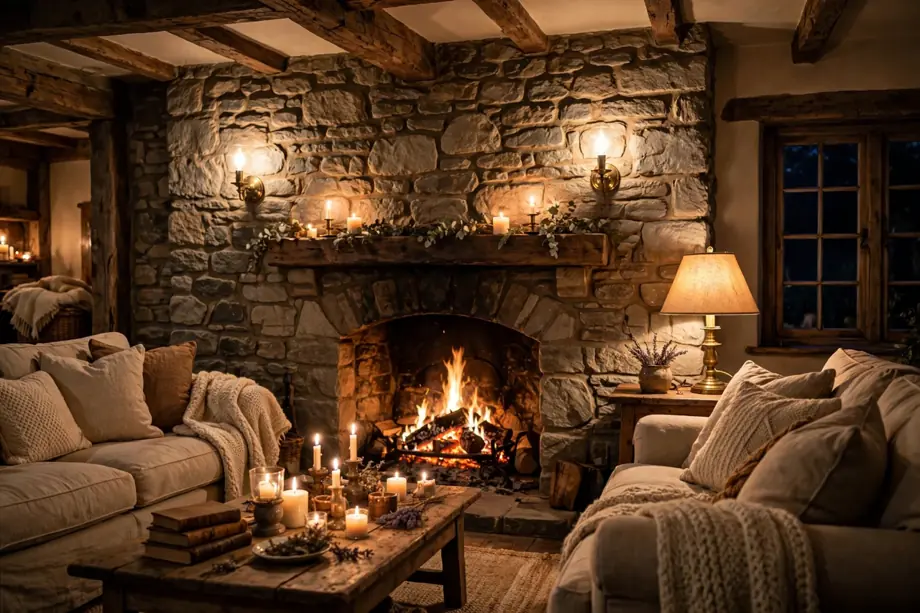
Taş Ev — Gece Hali
Aynı taş evin gece yorumunda mum ve ateş ışığı, sıcak aydınlatma, dimmer senaryoları ve karanlıkta canlanan mimari doku.
Gece atmosferini keşfet →Doğal Malzemeler Evi — 85 m²
Taş temel, kerpiç duvar, saz-kamış çatı ve mor salkımlı bahçeyle doğaya yakın bir ev: tasarım, mekânlar ve malzemeler.
Doğal evi keşfet →Doğal Ev 85 m² — Gece
Aynı doğal malzemeli evin akşam yüzü: şömine, mum, sıcak aydınlatma ve kerpiç ile taşın ışıkla kurduğu gece atmosferi.
Gece tasarımını incele →“İyi bir ev, yalnızca içinde yaşanılan değil, çevresiyle birlikte nefes alan bir yerdir.”
Bu çalışmalar, gerçekleşmiş yapıların belgeleri değil; yerel taş, ahşap ve bahçeyle kurulan yaşam düşüncesini anlatan mimari konseptlerdir.